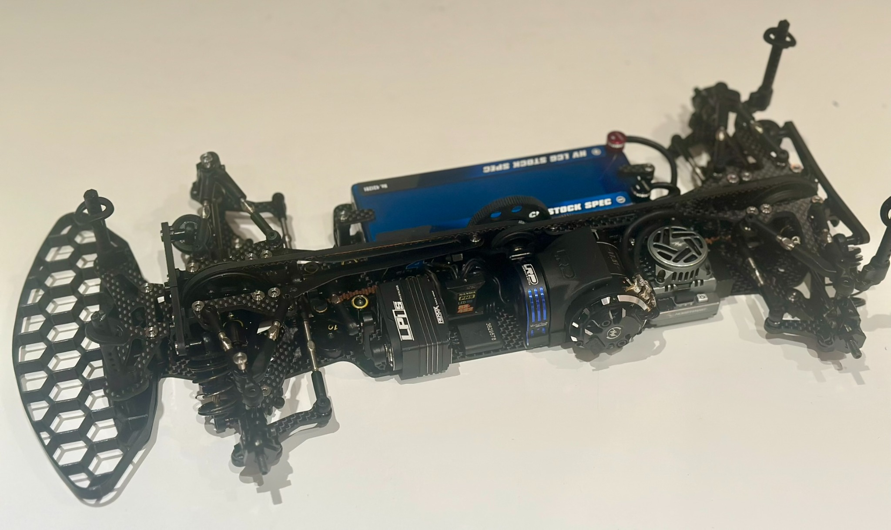

1/10 Touring Car Class
This class is designed for 1/10 scale electric touring cars, offering a competitive yet accessible way to enjoy high-performance indoor racing. Touring cars are fast, agile, and perfect for our club’s carpet track. Drivers of all experience levels are welcome.
Car Examples
Touring cars typically use 4WD chassis like the XRAY X4, Awesomatix A800, or Schumacher Mi9. They're fitted with low-profile bodyshells and use racing slicks or mini pins depending on surface conditions.
Rules
| Chassis | Any 1/10 chassis is allowed with any hop-ups. |
| ESC | No restrictions. |
| Servo | No restrictions. |
| Motor | 13.5T brushless max. Non-regulars with lower turn motors must notify race control. Motor must be limited to a comparable buggy speed. No championship points awarded if faster than 13.5T equivalent. |
| Gearing | No restrictions. |
| Tyres | Any tyres allowed. Recommended: Schumacher narrow mini pin yellow compound. Mini Pins: Front: U6793 Rear: U6794 No tyre additive permitted under any circumstances. |
| Bodyshell | Any 1/10 touring car style shell is permitted. |
| Batteries | Only 2S 7.4V Li-Po or 6-cell 7.2V NiMH allowed. No capacity limit. Li-HV batteries must only charge to 7.4V (BRCA rules). Random voltage checks may be carried out. |
Tips for New Racers
- Start with a reliable 13.5T motor and a simple ESC setup.
- Use the recommended tyres for better grip on carpet.
- Focus on clean driving and consistency during qualifying.
- Ask club members for help — we’re a friendly bunch!
On-Track Action
Here's a look at the Touring Car class in action at SMCC!